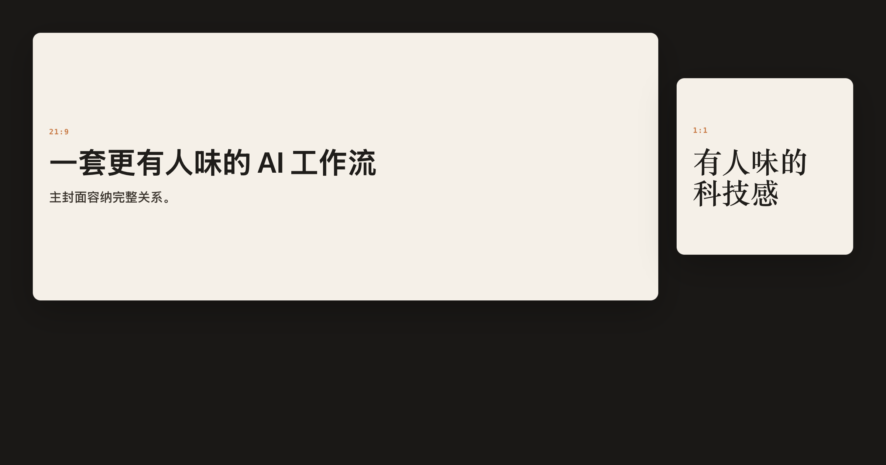

视觉 / LOKI 改造
Loki 社交卡片
把一篇文章重新拆成图文、封面和几张有证据的知识卡片，一整套能直接发小红书的图。

一篇文章、一份产品说明，或者一件需要讲清楚的事。
每张图先想清楚它要让人一眼看懂什么，证据图得看得清，中文的层级比装饰重要。
这套东西是在通用的生产逻辑上按 Loki Design System 改的，这里只放已经做出来的成品，不是网页上现生成的。
选一个想用的方法，抽出它的工作卡。
把一篇文章重新拆成图文、封面和几张有证据的知识卡片，一整套能直接发小红书的图。

一篇文章、一份产品说明，或者一件需要讲清楚的事。
每张图先想清楚它要让人一眼看懂什么，证据图得看得清，中文的层级比装饰重要。
这套东西是在通用的生产逻辑上按 Loki Design System 改的，这里只放已经做出来的成品，不是网页上现生成的。
这一页，先不聊工作。
杯子空了，冰块还在。
一个日常小互动，不发生真实点单。